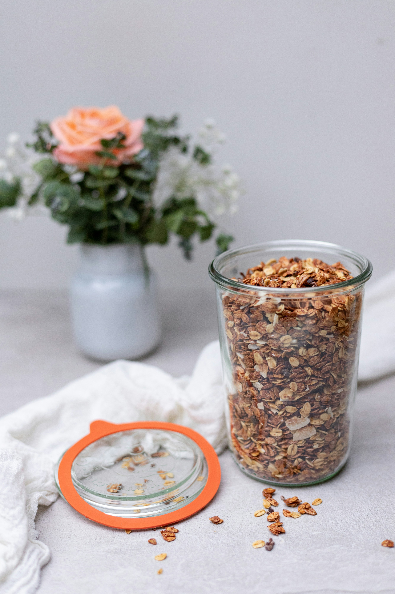

Grandma's Granola

Description
This is my grandmother's homemade granola recipe. She recommended serving it with plain, low-fat yogurt (with live cultures) and dark berries.
Ingredients
- 2 cups of old fashioned thick rolled oats
- 1/4 cup oat bran or rice bran
- 1 cup walnuts whole and half pieces
- 1/4 cup canola oil
- 1/4 cup pure organic maple syrup
- 2 teaspoons of vanilla extract
Steps
- Mix the dry ingredients together in a large bowl.
- Add the liquid ingredients to the bowl and mix together thoroughly. (If it seems very dry once mixed, add a little more oil.)
- Preheat oven to 250°F.
- Place granola mixture in a shallow baking pan, spreading out evenly.
- Once oven is heated to 250°F, place pan in oven (on the center rack - use oven mits or be careful not to touch the oven) and bake for about an hour, stirring every so often.
- Remove pan from oven (using oven mits) when granola is browned and crispy. You can vary the time depending on your oven and how crunchy you like your granola.
Photo by Yulia Khlebnikova on Unsplash